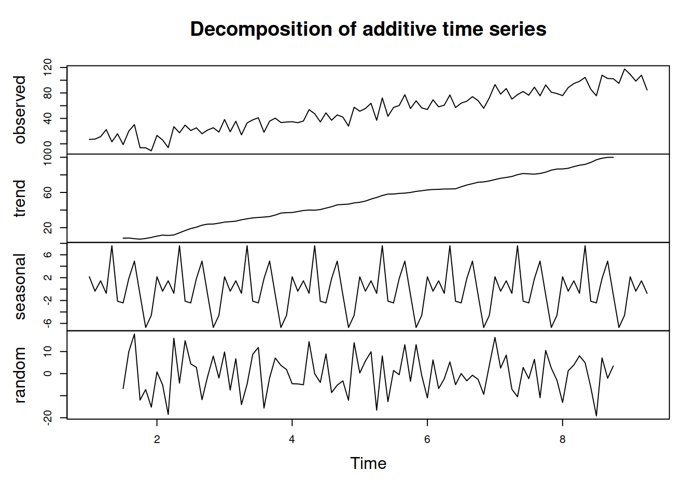

4.2 Classical Seasonal Decomposition
One of the classical textbook methods for decomposing the time series into unobservable components is called “Classical Seasonal Decomposition” (Warren M. Persons 1919). It is done using centred moving averages and is focused on approximation, not on forecasting. The idea of the method can be summarised in the following way:
- Decide, which of the models to use based on the type of seasonality in the data: additive (4.1) or multiplicative (4.2)
- Smooth the data using centred moving average (CMA) of the order equal to the periodicity of the data \(m\). If \(m\) is the odd number then the formula is the following: \[\begin{equation} d_t = \frac{1}{m}\sum_{i=-(m-1)/2}^{(m-1)/2} y_{t+i}, \tag{4.4} \end{equation}\] which means that, for example, the value on Thursday is the average of values from Monday to Sunday. If \(m\) is the even number, then a different weighting scheme is typically used, involving the inclusion of additional value: \[\begin{equation} d_t = \frac{1}{m}\left(\frac{1}{2}\left(y_{t+(m-1)/2}+y_{t-(m-1)/2}\right) + \sum_{i=-(m-2)/2}^{(m-2)/2} y_{t+i}\right), \tag{4.5} \end{equation}\] which means, for example, that we take a half of December of the previous year and half of December of this year in order to calculate the centred moving average in June.
The resulting series corresponds to the deseasonalised data. Indeed, when we, for instance, take an average values of the sales in a year, we automatically remove the potential seasonality, which can be observed individually in each month. A drawback from using CMA is that this way we inevitably loose \(\frac{m}{2}\) observations from the head and from the tail of the series.
In R, ma() function from forecast package implements CMA.
- De-trend the data:
- For the additive decomposition this is done using: \({y^\prime}_t = y_t - d_t\);
- For the multiplicative one, it is: \({y^\prime}_t = \frac{y_t}{d_t}\);
- If the data is seasonal, then the average value for each period is calculated based on the de-trended series. e.g. we produce average seasonal indices for each January, February, etc. This will give us the set of seasonal indices \(s_t\);
- Calculate the residuals based on what you assume in the model:
- additive seasonality: \(e_t = y_t - d_t - s_t\);
- multiplicative seasonality: \(e_t = \frac{y_t}{d_t s_t}\);
- no seasonality: \(e_t = {y^\prime}_t\).
Note that the functions in R typically allow selecting between additive and multiplicative seasonality only, there is no option for “none”, so inevitably you will get the value of \(s_t\) in the output, even if the data is not seasonal. Also, notice that the classical decomposition assumes that there is \(d_t\) - deseasonalised series, but it does not make any further split of this variable into level \(l_t\) and trend \(b_t\).
An example of the classical decomposition in R is the decompose() function from stats package. Here is an example with pure multiplicative model and AirPassengers:

We can see that the function has smoothed the original series and produced the seasonal indices. We can also notice that the error term still contains some seasonal elements, which is a downside of such a simple decomposition procedure. However, the lack of precision in this method is compensated by the simplicity and speed of calculation. Note again that the trend component in decompose() function is in fact \(d_t = l_{t}+b_{t}\).
And here is an example of decomposition of the non-seasonal data (we assume pure additive model in this example):
y <- ts(c(1:100)+rnorm(100,0,10),frequency=12)
ourDecomposition <- decompose(y, type="additive")
plot(ourDecomposition)
As you can see, the original data has no seasonality in it, but the decomposition assumes that there is one and proceeds with the default approach, returning the seasonal component.
There are other decomposition techniques and R functions that do a similar split into Error-Trend-Seasonal components with different assumptions, here are some of them:
decomp()function fromtsutilspackage does classical decomposition and fills in the tail and head of the smoothed trend with forecasts from exponential smoothing;stl()function fromstatsuses a different approach - seasonal decomposition by LOESS. It is an iterative algorithm that smoothes the states and allows them evolving over time. So, for example, the seasonal component in STL can change;mstl()fromforecastpackage does the STL for data with several seasonalities;msdecompose()fromsmoothdoes a classical decomposition for multiple seasonal series.
References
Warren M. Persons. 1919. “General Considerations and Assumptions.” The Review of Economics and Statistics 1 (1): 5–107. https://doi.org/10.2307/1928754.